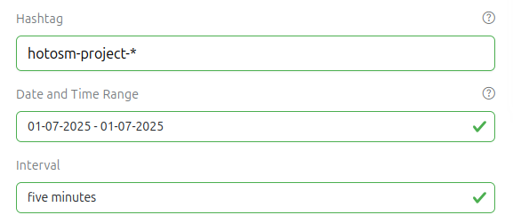
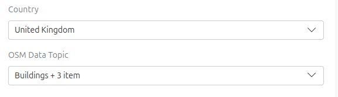

<div class="mX-5 p-10 bgc-white bd">
    <div class="container">
        <h1>Need some help?</h1>

        <p>
            These step-by-step instructions guide you through the <i class="ohsome-now-as-text"></i> and provide useful
            recommendations. Reach out to us via <a href="mailto:ohsome@heigit.org">ohsome&#64;heigit.org</a> in case
            you
            need
            further assistance.
        </p>

        <h2 id="hashtag-definition">What are hashtags?</h2>

        <p>
            Hashtags are used as a popular way to mark OSM Changesets which belong to a particular mapping event, larger
            campaign or dedicated group of contributors.
        </p>
        <p>
            Hashtags are further used by tools such as the <a href="https://tasks.hotosm.org/" target="_blank"
                                                              rel="noopener">HOT
            Tasking Manager</a> to identify and monitor organized mapping activity. Projects in the HOT Tasking Manager
            usually use a hashtag like
            <span class="icquote" style="white-space: nowrap;">#hotosm-project-14637</span> which contains the project
            ID.
        </p>
        <p>
            As of 2023-07-27 the most used hashtags in OSM are <span class="icquote">#missingmaps</span>,
            <span class="icquote">#redcross</span>, <span class="icquote">#youthmappers</span>,
            <span class="icquote">#indonesia</span> and <span class="icquote">#msf</span>.
        </p>
        <p class="note">NOTE: For <i class="ohsome-now-as-text"></i> hashtags are case-insensitive. This means
            that when you are filtering for <span class="icquote">#missingmaps</span> or <span class="icquote">#MissingMaps</span>
            or <span class="icquote">#missingMaps</span> all this will be treated the same as lower case <span
                    class="icquote">#missingmaps</span>.
        </p>

        <h2 id="define-query">How to define your query?</h2>

        <ol>
            <li>Enter your OpenStreetMap <strong>hashtag</strong> in the first field. In the example we have used
                <span class="icquote">missingmaps</span> (without leading&nbsp;<strong>#</strong>).
            </li>
            <li>
                Pick a pre-defined or custom <strong>time range</strong>. In the example we have selected the
                <span class="icquote">last year</span>. All timestamps displayed on the website are in UTC.
            </li>
            <li>
                Pick a <strong>time interval</strong> to define the temporal granularity of the statistics. In the
                example
                we
                have selected a <span class="icquote">monthly</span> interval.
            </li>
            <li>
                Once these base parameters are set, click the <strong>Get Statistics</strong> button.
                Your query is now processed by our server. The results will be displayed shortly after in the dashboard.
                For some hashtags and very long time ranges it
                might take up to 5 seconds until results are displayed.
            </li>
        </ol>

        <figure>
            
            <figcaption>Query form with example parameters</figcaption>
        </figure>

        <p class="note">
            NOTE: You can also use * as a wildcard in the hashtag filter. For example you can use hotosm-project-* to
            filter for mapping organized through HOT's Tasking Manager. Wildcards are only considered at the end and act
            like a startsWith expression.
        </p>

        <h2 id="refine-query">How to refine your query?</h2>
        <p>In addition to the query parameters mentioned above you can refine your query by specifying:</p>

        <ol>
            <li>a list of <strong>countries</strong></li>
            <li>a list of <strong>topics</strong></li>
        </ol>
        <figure>
            
            <figcaption>Query form with example refining parameters</figcaption>
        </figure>

        <ol>
            <li>
                Select one or more <strong>countries</strong> in the drop down menu.
                You can use this filter to make sure that the summary statistics and timeline statistics correspond
                only to your countries of interest.
                You can use the buttons below the drop down menu to select a <strong>pre-defined</strong> list of
                countries,
                which refers to the countries covered by <a target="_blank" href="https://www.hotosm.org/hubs/"
                                                            rel="noopener">HOT's regional hubs</a>.
            </li>
            <li>
                If you are interested in more detailed statistics beyond building and road mapping you can select one
                or more additional <strong>topics</strong> in the drop down menu.
                Each <strong>topic</strong> represents a specific subset of OSM mapping activity.
                Check below for a detailed description of each <strong>topic</strong>.
        </ol>


        <h2>How to read the results?</h2>
        <h3 id="overview-statistics">Overview Statistics</h3>
        <p>
            The overview statistics provide numbers about mapping activity for the hashtag and the time range defined in
            your query. In this example we consider data for <span class="icquote">#missingmaps</span> for a time range
            from <span class="icquote">2023-06-01</span> - <span class="icquote">2023-06-30</span>.
        </p>
        <p>
            Currently we always report on number of contributors (green), total edits (red), buildings (purple) and km
            of
            roads (blue). You can click on each card to update the timeline plot and the map. If any topics were chosen,
            they also get their own interactive card in this section.
        </p>
        <figure>
            
            <figcaption>The four main stats</figcaption>
        </figure>

        <h3 id="timeline">Timeline</h3>
        <p>
            The timeline plot shows insights about the dynamics in mapping activity over time. The plot provides
            information for the hashtag and the time range defined in your query and the time interval you have
            specified. In this example we consider data for <span class="icquote">#missingmaps</span> for a time range
            from
            <span class="icquote">2023-06-01</span> - <span class="icquote">2023-06-30</span> and a <span
                class="icquote">daily</span> interval.
        </p>
        <p>
            In this example each bar represents data for a single day. The height of the bar corresponds to the number
            of contributors who have mapped something in OSM using <span class="icquote">#missingmaps</span>.
        </p>
        <figure>
            
            <!--<figcaption>The four main stats</figcaption>-->
        </figure>

        <p class="note">NOTE: When you click on one of the <strong>overview statistics
            card</strong> the timeline plot will change and displays the results in the same color.
        </p>

        <p>
            There can be situations for which either the number of buildings or km of roads displayed in the timeline
            plot reveal negative numbers. This is not a bug, but the intended behavior and is related to the way how we
            measure changes in the OSM database.
        </p>
        <p>
            The example below shows a negative result for km of roads on 21 April 2023. In this example we consider data
            for <span class="icquote">#missingmaps</span> for a time range from
            <span class="icquote">2023-04-01</span> - <span class="icquote">2023-04-31</span> and a
            <span class="icquote">daily</span> interval. Negative values can occur when the length of deleted roads in
            OSM
            surpasses the length of newly created roads. This can happen when map validators correct the work of
            beginners by removing or correcting wrongly mapped roads.
        </p>
        <figure>
            
            <!--<figcaption>The four main stats</figcaption>-->
        </figure>

        <p class="note">NOTE: A shaded bar in timeline plot indicates that the value for this
            entry does not cover the full interval range. For instance, this can happen when you choose a monthly
            interval, but data is only available for the first few days of that month.
        </p>

        <p>
            When hovering over the plot an overlay on the top right of the graph can be seen. Various functions can be
            found here, e.g. a button to download a png file of the diagram or a button labeled “fit_to_content” to
            adjust the x-axis to the available data. The fit_to_content functionality can also be used in links to this
            website by adding <span class="icquote">&fit_to_content=</span> to the url. For example a link like
            <a target="_blank" href="https://int-stats.now.ohsome.org/dashboard#hashtag=missingmaps&fit_to_content=">https://stats.now.ohsome.org/dashboard#hashtag=missingmaps&fit_to_content=</a>
            would run a query on all data since 2009. However, the plot would automatically be adjusted to show data
            from October 2014 onwards, as this is the first time people have contributed to OSM using this hashtag.
        </p>

        <h2 id="map">Map</h2>

        <p>The map plot breaks down the overview statistics per country for the hashtag and the time range defined in
            your query. The interval setting is not considered in the map. In this example we consider data for
            <span class="icquote">#missingmaps</span> for a time range from <span class="icquote">2023-06-01</span> -
            <span class="icquote">2023-06-30</span>.</p>

        <p>The base color of the circles corresponds to the selected overview statistics card. The example map shows the
            number of contributors (green) per country.</p>

        <p>Both a) bigger circles and b) lighter color indicate a higher absolute value. In the example map Malawi
            reached the highest value (249 contributors) followed by the Democratic Republic of the Congo (193
            contributors). If countries were selected in the country filter, all other countries appear as gray in this
            plot.</p>

        <figure>
            
            <!--<figcaption>The four main stats</figcaption>-->
        </figure>

        <p class="note">NOTE: Negative results for buildings and km of road length are
            currently not properly depicted in the map symbology.
        </p>

        <h2 id="trending-hashtags">Trending Hashtags</h2>
        <p>
            The trending hashtags leaderboard lists the 10 most used changeset comment hashtags for the time range
            defined in your query. The first entry in the lists represents the hashtag with the highest number of
            distinct OSM contributors.
        </p>
        <p>
            In this example we consider data for a time range from <span class="icquote">2023-06-01</span> -
            <span class="icquote">2023-06-30</span>. The hashtag <span class="icquote">#opencitieslac</span> is the most
            popular one used by 1696 contributors followed by <span class="icquote">#missingmaps</span> with 1204
            contributors.
        </p>

        <figure>
            
            <!--<figcaption>The four main stats</figcaption>-->
        </figure>

        <p class="note">NOTE: When you click on a <strong>trending hashtag</strong> this
            hashtag will be directly considered in your query. The statistics will be updated immediately.
        </p>

        <h2 id="download-section">Download Section</h2>
        <p>
            At the bottom left you can download the data that corresponds to your current selection.
        </p>
        <p>
            The first one contains just the overview statistics found at the very top of the page. The second one
            contains monthly aggregated data which serves as the source for the bar chart, while the third one contains
            the
            data aggregated by country, which is the source for the map component.
        </p>
        <p class="note">NOTE: The download corresponds exactly to your current settings. If you e.g. restrict your
            search to some countries, the resulting data will only contains stats about these countries.
            Always wait for the components to stop loading before downloading data. Otherwise the
            download may contain inaccurate numbers.
        </p>
        <figure>
            
        </figure>

        <div class="d-f flex-row">
            <h2 id="live-mode">Live Mode</h2>
            <figure>
                
            </figure>
        </div>
        <p>Live Mode automatically refreshes the displayed statistics whenever new contributions to OSM arrive.</p>
        <p>
            To enter Live Mode simply select a <b>three hour time frame</b> and an <b>interval of five minutes</b>.
            A <b>play button</b> will appear next to the "Get Statistics" button. Press it and Live Mode will
            activate
            🥳.
        </p>

        <p class="note">NOTE: Changing any query parameters will disable live mode immediately. The only exception to
            this rule is changing the hashtag via the trending hashtags section.
        </p>

        <h2>How are the statistics calculated?</h2>

        <p class="note">NOTE: Negative results can occur for all Δ topics if the number of deleted objects
            surpassed the number of newly created objects for the hashtag and the time range defined in your query.
            The number of modified objects is not considered.
        </p>

        <div *ngFor="let topic of topicDefinitions | keyvalue: returnZero" id="{{topic.key}}">
            <h3><i _ngcontent-nly-c2="" class="fa-solid {{topic.value['icon']}} fsz-xl"></i>  {{ topic.value["name"] }}
            </h3>
            <p>
                {{ topic.value["tooltip"] }}
            </p>
            <h4 *ngIf="topic.value['formula']" [innerHTML]="topic.value['formula']" class="query-parameter"></h4>
            <p [innerHTML]="topic.value['additional-help']">
            </p>
            <div *ngIf="topic.value['query-parameter']"
                 class="icquote query-parameter">{{ topic.value["query-parameter"] }}
            </div>
        </div>
    </div>
</div>
